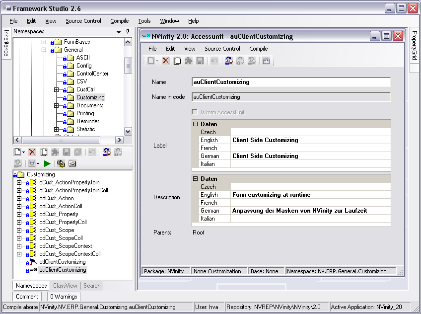
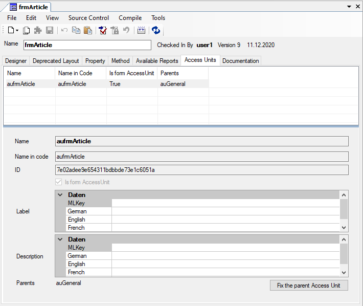

Access Units
Eine Access Unit repräsentiert einen Programmbereich.
Für jede Access Unit kann für 5 verschiedene Zugriffsarten (Access, AccessDerived, Insert, Update und Delete) abgefragt werden, ob der entsprechende Zugriff (nach Auswertung der Lizenzen und der Rechte des Benutzers) erlaubt wird.
Für ein Form haben die Zugriffsarten folgende Bedeutung:
- Access: Das Form darf geöffnet werden
- AccessDerived: Ableitungen dieses Forms dürfen geöffnet werden
- Insert: Einfügen von Datensätzen ist mit diesem Form erlaubt
- Update: Vorhandene Datensätze dürfen aktualisiert werden
- Delete: Datensätze dürfen gelöscht werden
Der Entwickler kann folgende Eigenschaften über das Designerfenster einer Access Unit definieren:
Name
Name der Access Unit. Aus diesem ergibt sich automatisch der im generierten Code verwendete Name Name in code.
Label
Mehrsprachige Bezeichnung der AccessUnit. Diese wird im externen Werkzeug zur Rollenverwaltung (Bestandteil der Runtime Administration) angezeigt.
Description
Hier kann (mehrsprachig) beschrieben werden, welchen Programmbereich diese Access Unit repräsentiert. Die Beschreibung wird u. a. im externen Werkzeug zur Rollenverwaltung als Tooltip zur AccessUnit angezeigt.
Im Designerfenster wird über die Checkbox is form AccessUnit angezeigt, ob diese Access Unit die spezielle Form Access Unit (s.u.) ist, die beim Öffnen des Forms in der Anwendung ausgewertet wird. Diese Eigenschaft kann durch den Benutzer nicht geändert werden.
Unter dem Punkt Parents werden alle Access Units aufgeführt, von denen diese Access Unit eine Unterkomponente ist, also alle Vaterknoten im Access Unit Treeview. Diese Eigenschaft kann nur über den Access Unit Treeview (Access Unit Hierarchie) geändert werden.
Access Units können im Namespace angelegt werden (z.B. auSales, um den kompletten Verkauf zu repräsentieren). Für diese Access Units steht der gewohnte Checkin/Checkout-Mechanismus zur Verfügung.

Außerdem können Access Units in einem Form angelegt werden (Menü File / New / Access Unit oder Button  New ... / Access Unit). Diese Access Units sind Unterkomponenten des Forms und werden daher automatisch mit dem Form aus- und eingecheckt.
New ... / Access Unit). Diese Access Units sind Unterkomponenten des Forms und werden daher automatisch mit dem Form aus- und eingecheckt.
Jedes Form besitzt automatisch eine besondere Access Unit, die das Form selber repräsentiert. Der Name dieser Form Access Unit ist der Name des Forms mit dem Präfix au (also z.B. für frmSalesOrder aufrmSalesOrder).
Wenn ein Form in der Anwendung geöffnet wird, so wird vorher automatisch überprüft, ob das Recht „Access“ für die FormAccessUnit des Forms erteilt wurde und ob für alle FormAccessUnits der Basisforms das Recht „AccessDerived“ erteilt wurde.
Für jedes Form wird automatisch eine FormAccessUnit angelegt. Diese Access Unit kann nicht gelöscht werden.
Form Designer Registerkarte Access Units:

Aus dem Code heraus kann ein Zugriffsrecht einer AccessUnit von einem Form aus folgendermaßen abgefragt werden:
bool InsertGranted = Global.AUHelper.Granted(this.aufrmSalesOrder, AUPermissionType.Insert);
bool FormAccessGranted = Global.AUHelper.Granted(this.FormAccessUnit);
bool AuSalesGranted = Global.AUHelper.Granted(AUList.auSales, AUPermissionType.Delete);
Wenn kein AUPermissionType angegeben wird, wird automatisch Access abgeprüft. Auf die FormAccessUnit kann aus dem Form sowohl über ihren Namen als auch über FormAccessUnit zugegriffen werden. Über die Klasse AUList sind alle global verfügbaren AccessUnits ansprechbar.